AI Image Gen
Un studio de génération et de retouche d’images, branché sur vos propres clés ou sur vos agents en ligne de commande.
Le point de chute de tout ce que vous capturez : envoi en un raccourci, lien public immédiat, albums, statistiques et clés d’API. Sur votre serveur, pas celui d’un autre.
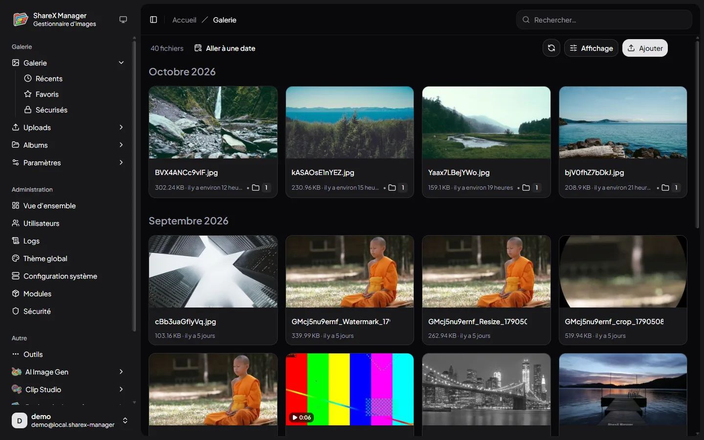
Le flux
ShareX sur Windows, Flameshot sur Linux, l’application Android depuis le partage du téléphone : tout arrive au même endroit, rangé par mois, avec sa miniature et son lien.
.sxcu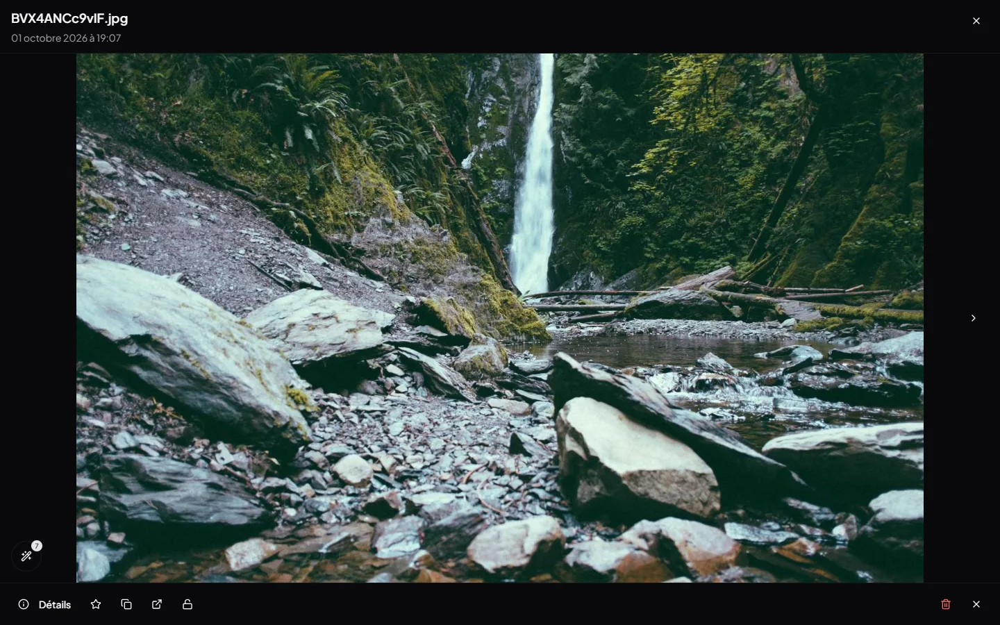
Le catalogue
Un album est privé à sa création. Il peut ensuite être partagé par son lien, ou exposé dans le catalogue public, qui a sa propre navigation et ses propres pages.
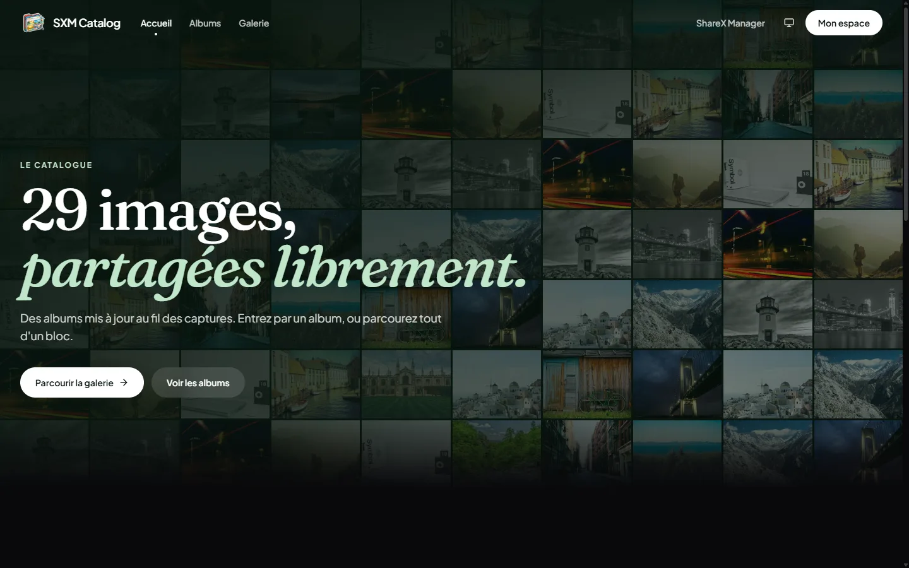
Les modules
Une fois vos images au même endroit, autant s’en servir. Chaque module s’active ou se coupe d’un clic, et travaille directement sur votre galerie.
Un studio de génération et de retouche d’images, branché sur vos propres clés ou sur vos agents en ligne de commande.
Un éditeur de clips dans le navigateur : images, vidéos, textes animés, voix et musique.
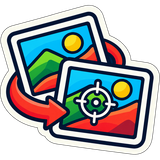
Retrouvez d’où vient une image : plusieurs moteurs interrogés d’un coup, résultats côte à côte.
Lisez ce qu’un fichier déclare de lui-même : généré par IA ou non, signature, métadonnées. Ouvert sans compte.
Aperçu
Les captures viennent d’une instance de test, garnie de photos libres d’utilisation.
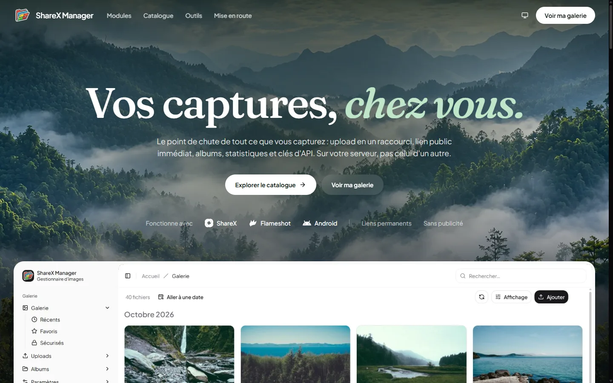
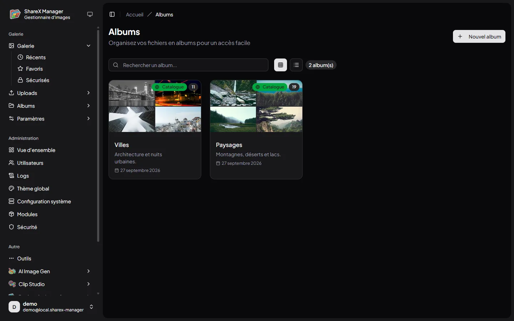
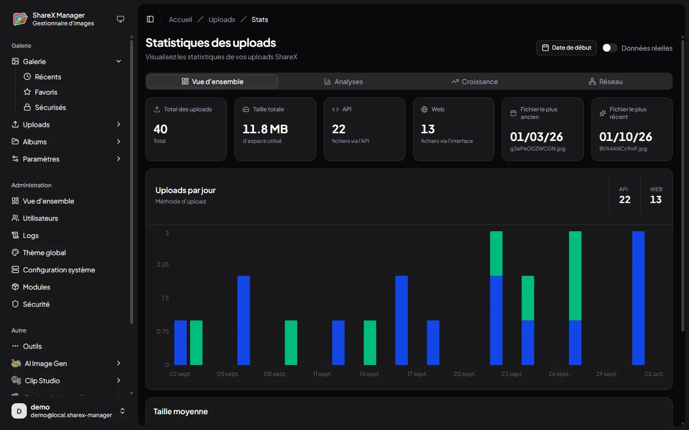
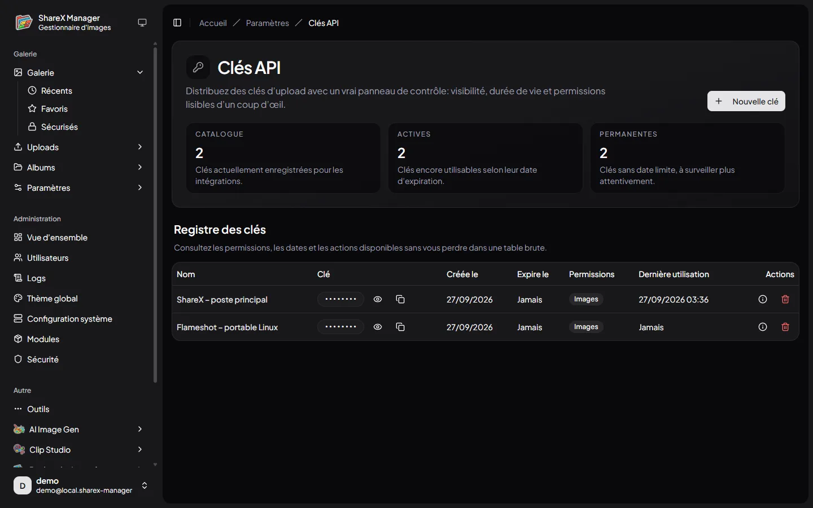
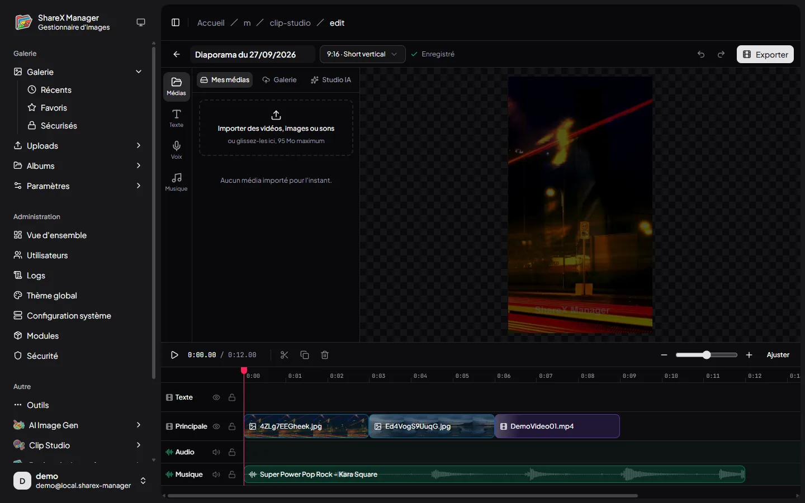
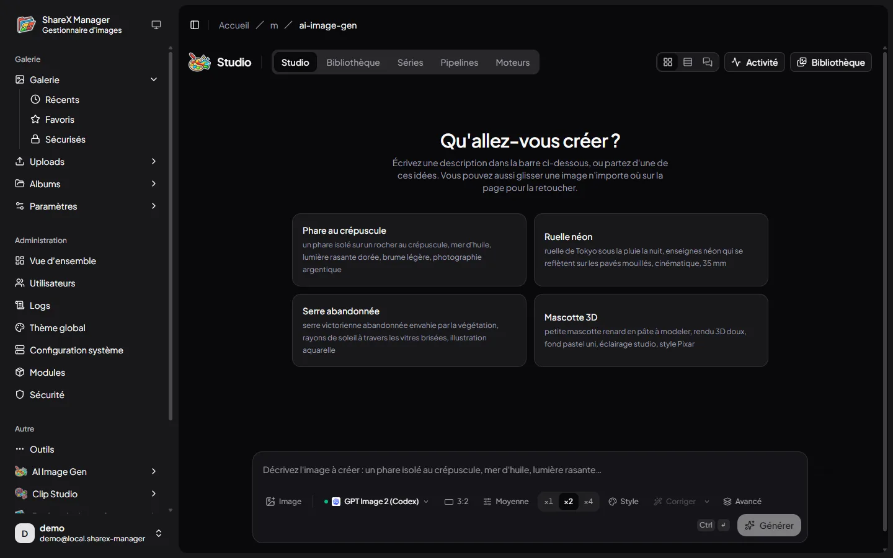
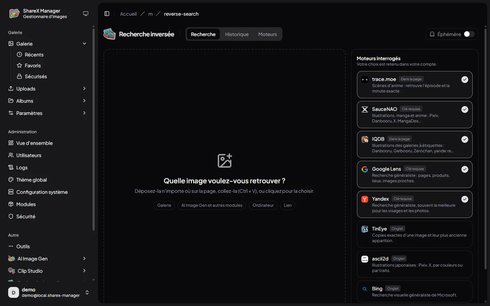
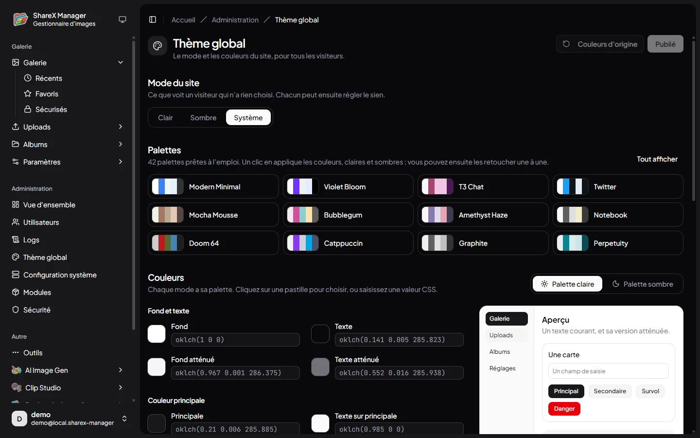
Mise en route
Aucun service tiers. Le serveur tourne sur Bun, en production dans Docker, et vos fichiers restent sur votre disque.
bun run setup pose les réglages et crée le premier administrateur, docker compose up -d lance l’instance.
Une clé d’API par machine, avec ses permissions par type de fichier.
ShareX, Flameshot (avec fu) ou l’application Android pointent vers votre domaine.
# Production (Docker) git clone https://github.com/pedrokarim/sharex-manager.git cd sharex-manager bun install bun run setup # URL, port, authentification, administrateur docker compose up -d --build
En développement : bun install, bun run setup, puis bun dev. Le détail est dans la page Installation du wiki.
Documentation
Installation, réglages, clients d’envoi, API et modules, pas à pas.
Libre, sous licence GPL v3. Le code, les modules et l’application mobile sont dans le même dépôt.